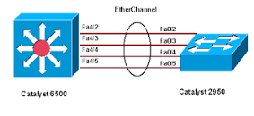
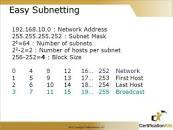

Basic explaination of Cisco Routing and switching
In this page we are going to show you some basic explaination of topic of CCNA routing and switching .
Now we are going to create a unorder list of cisco's routing and switching topics
-
Etherchannel

-
You can aggregate upto 8 physical links into 1 logical link.
Mean you can use 8 physical links bandwidth in a 1 logical link.
For example your one link's bandwidth is 100 Mb, If you aggregate 8 links into one link, Obviously your link's bandwidth will increase upto 8 times ( 800 Mb). - If your 1 or 2 links becomes down than your network will be working fine. On the other side if you use only 1 link as normally ( without etherchannel) your network will be down.
Subnetting

Switching
- Store and forward switching
- Cut-through switching
- Fragment Free switching
Etherchannel is mainly used to aggregate upto 8 physical/ethernet links into 1 logical link. The Benefit of this is that "if our 1 or 2 links become down" Your network will be working proper.
Some Benefits of Etherchannel
Subnetting is basically used to protect/saves unwanted IP address from a from a range of classfull address.
There are three type/methods of switching,